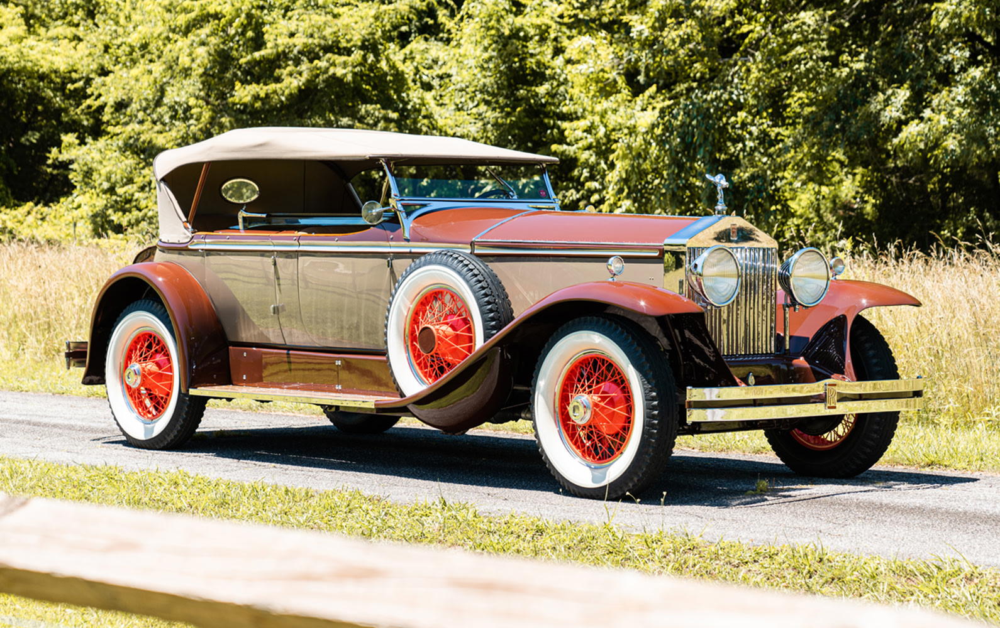

About the Rolls-Royce Phantom I
The **Rolls-Royce Phantom I**, introduced in **1925**, succeeded the legendary Silver Ghost. It was renowned for its **smooth performance**, **unmatched luxury**, and **handcrafted excellence**. Built in both the UK and the US, it set new standards for elite automobiles.
Specifications
- 📅 Year of Production: 1925 - 1931
- 🚗 Engine: 7.7L Inline-6
- ⚡ Horsepower: 113 HP
- 🏎️ Top Speed: 80 mph (129 km/h)
- ⚙️ Transmission: 4-Speed Manual
- 🛠️ Body Styles: Limousine, Coupe, Roadster
Interested in Buying?
Click the button below to visit the official seller's page and purchase this classic car.
Buy Now